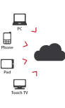

Manuel Cajada
Software Developer
Experiência professional:
- Byclosure
- ZAP TV, Happy Vet, Easy Easy Apps
Educação:
- IST - MEIC
- Sistemas Distribuídos
Interesses:
- Desenvolvimento de jogos
- Longos passeios na praia (LOL)
- Ornitologia

Byclosure
- A Byclosure foi fundada em 2008 e está baseada em Lisboa. Tem no seu ADN uma natureza Web e Agile.
- Apoiamos os nossos clientes em projectos de inovação complexos e desafiantes em Aplicações Ricas de Internet em HTML5 e abordagens Multi-dispositivo.
- A nossa abordagem à Engenharia de Front-end é feita com um stack tecnológico sobre Google Web Toolkit, integrando com serviços na cloud previamente desenvolvidos ou desenvolvendo esses mesmos serviços em Ruby on Rails ou Java.

Byclosure Opportunities
Topics
Responsive Web Design
Offline Support
Native look-and-feel
Responsive Web Design
What is it?

http://cdn.dotcominfoway.com/images/responsive-web-design-infographic.jpg
Responsive Web Design
Why?
- Gartner research suggests that by 2013, mobile phones will overtake PCs as the most common Web access device worldwide.
- The mobile devices market is still fragmented
- A wide variety of screen sizes and input methods
Responsive Web Design
How?
Viewport
- Meta tag in the head of the page to control the page's width, height, zoom level, dpis, etc
CSS Media queries
@media screen and (min-width: 480px) and (max-width: 800px) {
body {font-family:"Comic Sans MS", fantasy, cursive;}
/* [etc] */
}
Offline Support
Extra References
<Thank You!>
Important contact information goes here.
For more tek info please contact Byclosure at:
html5@byclosure.com
or
mobile@byclosure.com
g+gplus.to/byclosure
facebookfacebook.com/byclosure
twittertwitter.com/byclosure
wwwbyclosure.com
githubgithub.com/byclosure